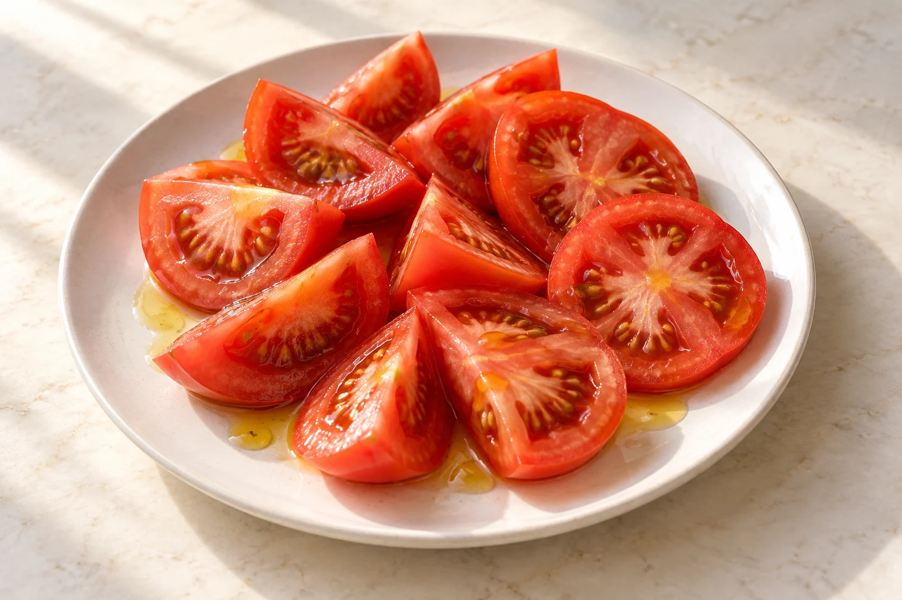

01
Entrantes
Ensalada de queso de cabra
12.90 €Ensalada de aguacate y langostinos
13.90 €Ensalada con lomitos de atún
10.90 €Tomate con ajo o cebolla
8.50 €Sopa de mariscos (en temporada)
9.50 €Salmorejo (en temporada)
8.00 €Alcachofas con jamón
14.90 €
02